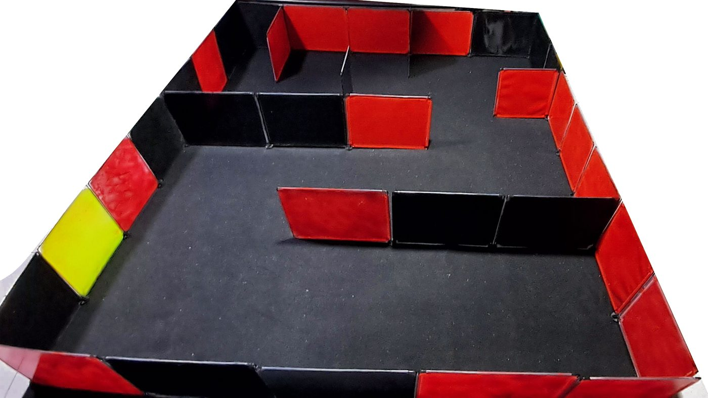

Trabajo de titulación · Ingeniería Civil Electrónica · UTEM · 2026
Un robot que entra a un lugar que no conoce, lo recorre solo y dibuja su plano
Esta guía explica, con dibujos interactivos y datos medidos, cómo se construyó un robot de bajo costo que mapea, navega y explora interiores con ROS 2. Está pensada para quien quiera entenderlo, ponerlo a prueba o construir el suyo.
Basada en la tesis Navegación y exploración autónoma de interiores utilizando un robot móvil de tracción diferencial, de Sebastián Valderas Neculqueo, con el profesor guía Patricio Galarce Acevedo.
Aquí se muestra una simulación del robot explorando. Necesita JavaScript.
El prototipo
El robot real, en su recinto de pruebas
Un chasis impreso en 3D, dos motores con encoder, un sensor láser que gira, un Arduino Nano, una Raspberry Pi 4 y un computador que se comunica con él por una red Wi-Fi dedicada. Los materiales montados en el robot costaron 444 643 pesos chilenos.
Ejecución de demostración sobre el robot real, publicada el 29 de septiembre de 2026. En RViz, el programa que muestra los datos del robot, la línea verde es la ruta que planifica la navegación hacia la frontera elegida. El video se carga solo si lo reproduces.


En cuatro pasos
Cómo hace un robot para explorar solo
El robot repite un ciclo varias veces por segundo. Cada paso tiene su capítulo en la guía.
Un láser gira y mide la distancia a las paredes en todas direcciones, en un plano horizontal.
Ver y dibujar el mapa → EstimarCuenta cuánto giró cada rueda para saber cuánto avanzó, y corrige ese cálculo con el láser.
Moverse y medir el avance → DecidirBusca los bordes entre lo que ya conoce y lo que no, llamados fronteras, y elige uno como destino.
Decidir a dónde ir → MoversePlanifica una ruta que evita obstáculos y ordena a cada rueda la velocidad justa para seguirla.
Planificar y seguir una ruta →Resultados, con sus matices
Lo que se logró y cómo se midió
Cada cifra viene de la tesis y se explica en su capítulo. También está lo que no se alcanzó a medir, porque saber dónde termina la evidencia es parte del resultado.
La tasa de éxito al navegar hacia destinos fijos elegidos por una persona. La navegación funcionó de punta a punta durante la exploración, pero no tiene un indicador cuantitativo propio. Ver qué se demostró y qué no.
Rutas de lectura
Elige cómo leer
Estudio ingeniería o robótica
La guía completa, en orden- Del problema al resultado, diez capítulos
- Simulaciones para probar cada idea
- Preguntas difíciles para ponerte a prueba
Quiero construir uno
Lo práctico primero- El robot por dentro
- Controlar cada rueda
- Constrúyelo tú, con lecciones aprendidas
La guía
Diez capítulos, del problema a la construcción
Cada capítulo parte con lo esencial en tres ideas, explica con un interactivo o una figura, cita la sección de la tesis donde está el respaldo y termina con los malentendidos más comunes.
El problema
Qué significa que un robot sea autónomo en interiores, qué alternativas existen y qué se eligió.
El robot por dentro
Piezas, energía, costo, ROS 2 y el camino de una orden desde el computador hasta el motor.
Moverse y medir el avance
Tracción diferencial, encoders y odometría. Por qué 7,18 % y 3,63 % miden cosas distintas.
Controlar cada rueda
PID en tiempo discreto, el hallazgo del PI incremental, el windup y la sintonía con PSO.
Ver y dibujar el mapa
Cómo mide un LiDAR 2D, qué no ve, y cómo SLAM arma el mapa y corrige la deriva.
Planificar y seguir una ruta
Mapas de costos, A estrella, ventana dinámica y el detalle de la esquina que no cabía.
Decidir a dónde ir
Exploración por fronteras y por qué 53 de 54 metas abortadas no eran fallas.
El gemelo digital
Qué se puede comprobar en simulación y qué solo en el robot real.
Qué se demostró y qué no
Verificar frente a validar, los cuatro objetivos, las limitaciones y dónde fallaría.
Constrúyelo tú
Materiales, versiones, repositorios base y doce lecciones aprendidas en el camino.
Fuera del laboratorio
Dónde se usa esta misma tecnología
Las ideas de este robot de escritorio son las mismas que mueven máquinas comerciales y científicas. Cambian la escala, los sensores y las exigencias de seguridad.
Aspiradoras robot
Muchos modelos llevan una torre con un láser giratorio. Cada rebote se convierte en un punto del plano de la casa, que el robot guarda y reutiliza en cada limpieza (Dreame Technology, s.f.).
Relación con la guía: Ver y dibujar el mapa
Bodegas
Amazon usaba robots en zonas cerradas, separadas de las personas. Su robot Proteus circula entre trabajadores y combina varios sensores, entre ellos un LiDAR de alta precisión (The Robot Report, 2022).
Relación con la guía: Planificar y seguir una ruta
Hospitales
Robots de reparto como TUG llevan insumos por pasillos con navegación basada en cámaras y láser, sobre mapas y rutas definidos digitalmente (EMSD, s.f.).
Relación con la guía: navegar sobre un mapa ya guardado, que aquí quedó como trabajo futuro
Cuevas y túneles
En el desafío subterráneo de DARPA, el equipo CERBERUS ganó en 2021 con robots que navegaron, exploraron y mapearon túneles y cuevas de forma autónoma (Tranzatto et al., 2022).
Relación con la guía: Decidir a dónde ir
Marte
El sistema AutoNav del rover Perseverance mantiene un mapa del terreno a su alrededor, elige su camino y replanifica para esquivar rocas. En el sol 200 recorrió 167 de 175 metros por su cuenta (NASA JPL, 2021).
Relación con la guía: Planificar y seguir una ruta
Docencia
Plataformas como TurtleBot 3 se usan para enseñar ROS. Un robot propio cuesta menos y permite modificar cada capa, aunque exige resolver lo que un producto trae listo.
Relación con la guía: El robot por dentro
Sobre este sitio
Un trabajo de titulación, abierto para la comunidad
Las tesis suelen quedar en un repositorio y leerse poco. Este sitio busca lo contrario: explicar el trabajo en simple, mostrar la evidencia y también sus límites, y dejar el camino trazado para quien quiera repetirlo o mejorarlo.
Las cifras y figuras del robot vienen de la tesis y se citan con su sección. Los ejemplos del mundo real y los temas que la tesis toca de forma implícita, como la diferencia entre verificar y validar o la privacidad de los mapas, se apoyan en fuentes externas marcadas en Recursos.